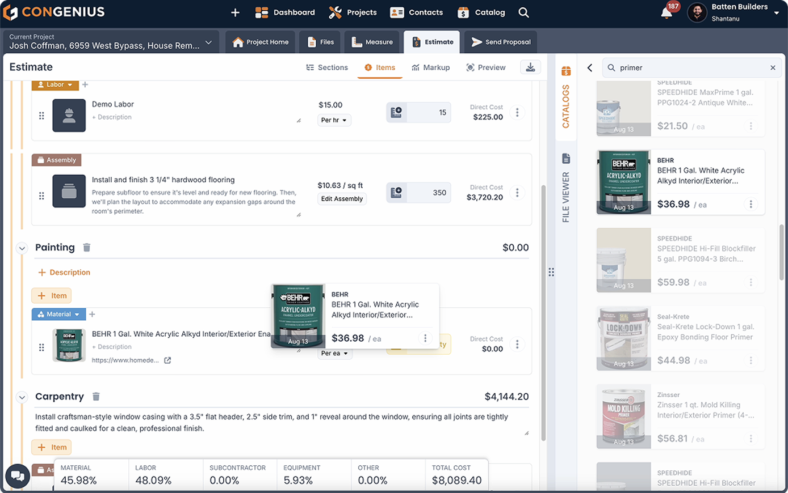
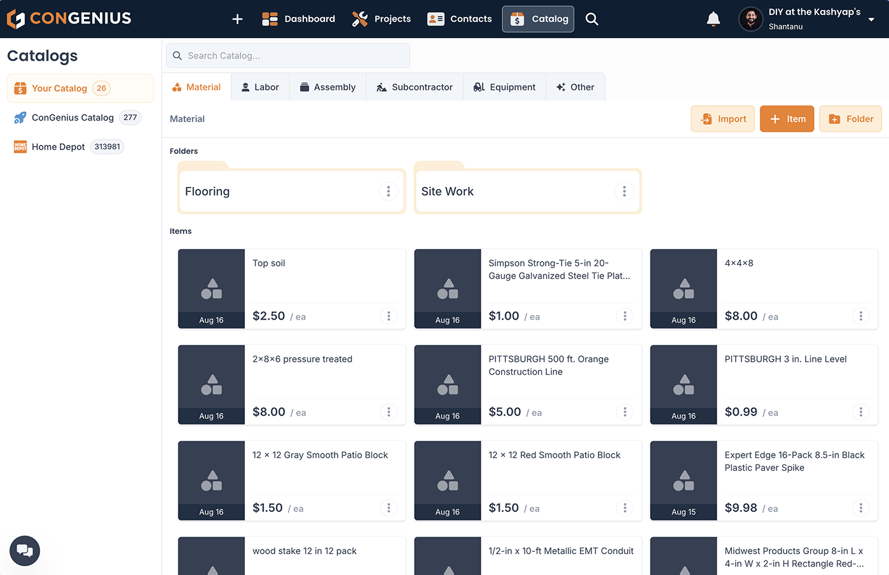
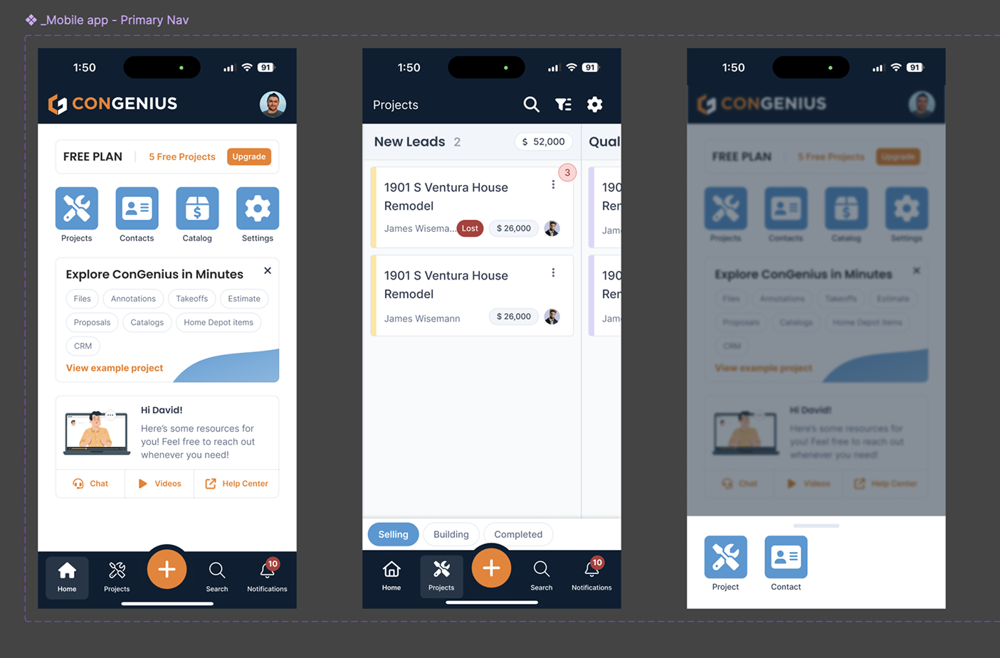
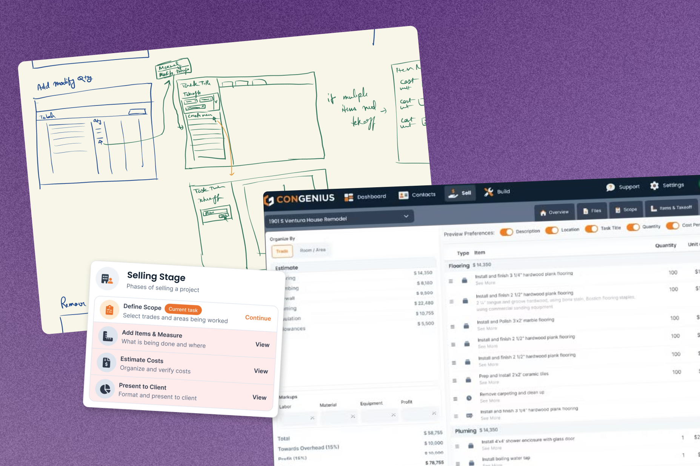
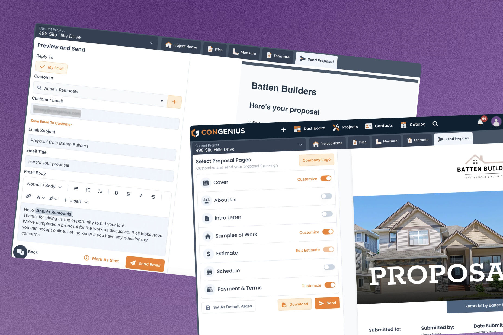
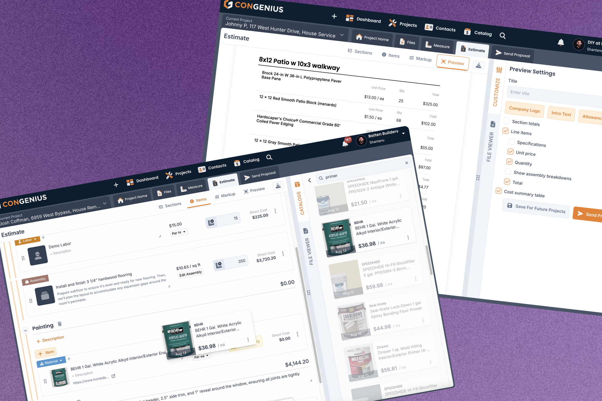
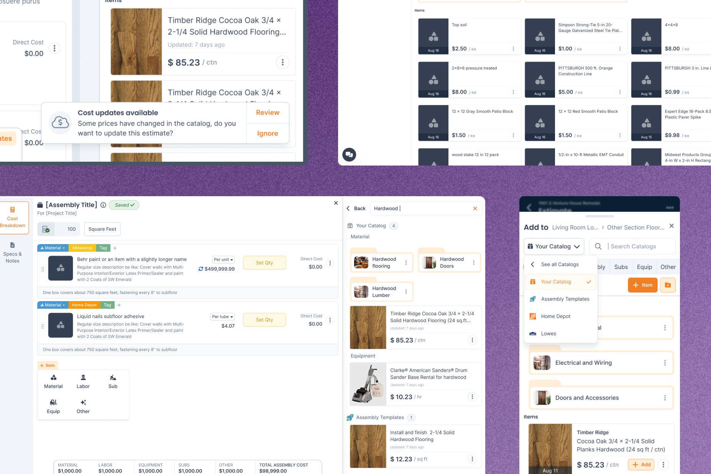

Rebuilding the workflow a construction business actually runs on, from a rigid grid into freeform estimating



Three years, one designer, ideation to 1.0, and the clearest lesson I have about when a design system starts paying for itself.
Product: estimating rebuilt from a fixed line-item grid into freeform entry on a shared catalog of reusable assemblies.
Depth: I built the first estimator to the founder's spec, it landed flat, and the rebuild that replaced it is the one I designed.
Verification: none of the product work was instrumented, so there are no usage numbers to quote.
I stayed through the team scaling from eight to eighteen and back down to six. Everything with a UI on it came through me.
An idea, a scope still open, and the one surface the whole business runs on
ConGenius was an early-stage construction estimating SaaS, still at ideation when I joined: a domain-expert CEO, an engineering lead who knew what could be built, and the scope still open. I did the competitive research, the wireframes, and the prototypes that became the MVP, then carried it through the 1.0 push.
Estimating was the heart of it. Before a contractor bids a job, someone prices every piece of it: materials, labor, equipment, margin. At ConGenius that took hours, by hand. It is the surface nobody puts in a demo.
The MVP we shipped was a spreadsheet, and it landed flat
Our CEO had run construction businesses for twenty years and specced the estimator from his own workflow. I had a four-year UX degree and one year of work, I made the case badly, and I built what I was asked to build.
I had no standing in the argument until I understood the trade
I joined knowing nothing about construction, and worse than nothing in one respect: I grew up in India, where buildings go up by different methods than they do here, so the few instincts I had pointed the wrong way. For the first few months I was mostly producing screens on request, and the work was thin enough that leadership had started wondering whether the hire was going to work out. I asked them for resources. They handed me a stack of construction books and I read them end to end.
That did not make me a subject-matter expert and I do not claim it did. It made me subject-aware, which was enough to change what I could contribute. I stopped taking requests at face value and started being able to tell the difference between how our founder ran his business and how the person using the software actually worked. Most of what follows on this page is downstream of that.
Everyone had a reference point, and none of them was the user
The CEO is a detail person and knows estimating cold. He wanted a field for everything: internal notes, vendor notes, customer notes, somewhere to record every consideration a careful estimator carries in their head. Every one of those fields existed because he had once needed it. He was right that the detail matters. What the spec assumed was somebody with time to maintain it.
Our buyers were two to four person construction companies, where the person estimating is also the person bidding, buying materials, and often on the tools. Nobody there manages software. Our CTO pulled the other way. He had been around construction, but his instincts were technical, and he wanted keyboard-first patterns and spotlight-style search. Good design for someone who lives in their tools. Our users had one hand free and were standing on a job site.
What shipping it settled that arguing hadn't
The MVP went out as a table, close to Excel, with the modules gated in sequence: finish one before the next unlocks. Users found it complicated and adoption stayed flat. I had argued against the gating and some of the field count, and I argued it the way I knew how, from user examples and what I could see beta users doing. That was the right instinct in the wrong weight class. Secondhand examples lose to twenty years of someone's own firsthand experience, and I kept bringing them for longer than they were working.
What moved it was the launch. Once estimators had it and the complaints were specific, the diagnosis below stopped being my opinion. Nobody handed me a rebuild to run. What the launch bought was permission to try something less rigid, and I did the design work from there. What I took from it is not that they were wrong. It is that a founder's own workflow is a sample of one, mine included, and the fastest way to settle that is to put a working version in front of the people who are not in the room.

What the rebuild had to fix
The original surface was a fixed grid: pick a category, pick an item, enter a quantity, repeat. That flow only works if you already know the full itemized breakdown before you start typing. The screen itself was fine. The assumption underneath it was not: that the hardest part of the job was already done before anyone opened the app.
- Estimators arrive with a scope of work in a contractor's language, not a list of priced line items
- They work out the itemization while entering it, so the grid pushed a translation step off-screen into someone's head. That translation, not the typing, was where the hours went, and it never surfaced as a UI complaint because nobody could see it
- Anything that didn't map cleanly to a category got parked in notes fields, which meant the structured data the rest of the product depended on was quietly incomplete
The one surface that never needed a rebuild
Estimating was rebuilt three or four times and was still being reworked when I left. Create Proposal, which I scoped and designed on my own, shipped once and kept its architecture for three years. It picked up minor tweaks, a section added, a couple of inputs changed, and nothing structural.
Proposal building is the simpler problem and I am not claiming otherwise. But it is the same product, the same users and the same three years, with one surface designed out of a founder's workflow and one out of the user's.

The diagnosis came from user feedback routed through the CEO and from support conversations, not a formal study. I had asked to interview contractors directly and run codesign sessions. The answer was that he had run construction businesses for twenty years and I should ask him.
That is expertise, and it is one sample. So I worked the channels I had, which leaves me strong qualitative signal and no protocol or control. "Landed flat" is what adoption looked like from where I sat, in support volume and in what users said. Nobody was measuring, so I have no launch numbers behind it.
Letting estimators enter work the way they actually say it
Enter the work in your own words first; apply structure after. The grid didn't disappear, it stopped being the only door in.
Inverting the order
Estimators enter work in their own words first. Structure gets applied after, not before. Line items became reusable components instead of one-off rows, so a piece of work described once could be pulled into the next estimate.

Estimating was never instrumented. No task-completion times, no before-and-after on how long an estimate took, no error rates, no retention cut by workflow.
Product analytics were not in place at that stage, and I did not push hard enough to get them in. That is the part I would do differently. Saying "it halved estimating time" would be inventing a number.
The decision came from repeated user requests and a hard constraint set, not a formal options matrix. There is no tidy list of rejected options behind it.
What was genuinely weighed was scope: extend the grid, or replace the entry model. Replacing it won, because extending it would have kept the translation step exactly where it was.
A shared catalog, and the edges that came with sharing it
Freeform entry fixed how work got into an estimate. It didn't fix that most of that work had already been entered, on a different job, last month.
Why an assembly beats a line item
Construction estimates rhyme. The same materials, the same labour rates, the same crew configurations recur across jobs with only the quantities moving. Every one of those was being retyped, and every retype is a chance to fat-finger a price into a bid you're contractually held to.
The global catalog holds priced items maintained once and pulled into any estimate. On top of it sit assemblies, prebuilt bundles for work that always goes together. A line item saves you a lookup. An assembly saves you a decision you already made and would otherwise make again, slightly differently, under time pressure.

The edges the data layer couldn't settle on its own
Catalog data is shared across tenants and tenants override prices locally, which generates interface questions rather than only data-layer ones. The same 1.0 push also had to make the workflows usable on a phone on a job site, not just shrink the desktop layout onto one.
- A shared price changes and a tenant has overridden it: does their number move, and how do they find out?
- An estimate has already gone out the door: does it hold the price it was sent at, or track the catalog?
- Where does the interface admit that these are different numbers, rather than silently picking one?
When to build the system, and how long it took me to notice
You can't define a system before you know what the product is. The mistake wasn't starting without one. It was reading two arguments for building one as reasons I couldn't.
Two signals, and I read both of them backwards
For the first stretch there was nothing to systematize. We were still resolving what the product was, and componentizing a surface that changes every month produces a system that documents the wrong thing. That part I would do the same way again.
The first signal was how our CEO wanted to work. He thought in finished screens and wanted high-fidelity mockups for every idea. I had come out of that degree with the opposite instinct, low fidelity until high fidelity is necessary, and I spent a long time trying to win that argument instead. He was never going to learn to read a wireframe, and that is not a failing, it is how he thinks. A stakeholder who needs finished-looking screens at exploration speed is the strongest argument for a component system there is, because a system is what makes a throwaway comp cheap. I read it as the reason I had no time to build one.
The second was the rebuild count. Estimating went through three or four and was still being reworked when I left. I read that as unstable requirements, which it was, and kept drawing screens. Repeated rebuilds of one surface are the other condition a system pays for. Three refactors in, I should have stopped drawing and built the layer that would absorb the fourth.
The cost showed up as duplicated work, inconsistent states across surfaces, and patterns I re-solved because there was no canonical version to point at. None of it was a catastrophe on any single day, which is exactly why it took three years to notice.
That lesson has a direct sequel. Token Studio is a three-tier token system I built later, before a line of production code was written, specifically so the next team wouldn't pay it.
The engagement ended in August 2025. Three years in, I had taken a product from ideation to 1.0 and run the growth motion that fed it. What I took away matters more than either: when you are the only designer, nothing gets designed unless you notice it needs to be.
That is not a title. It is how I have worked since.
Our CTO left a few months before I did. From his farewell note: "In the early days, you would throw a pretty design at a problem without fully understanding the issue. Now, I see you seeking to understand the problem and reframing your thinking until you're confident that your solution will uphold the requirements."